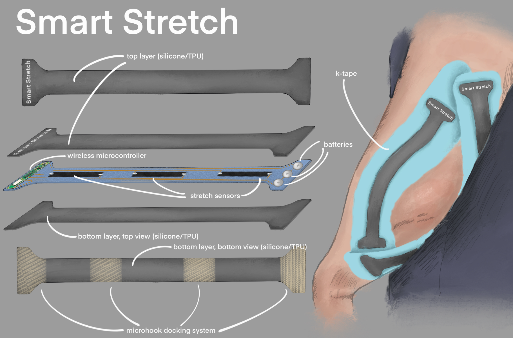

Dual-Modal Sensing
SmartStretch captures two complementary signals from a single wearable. Dry embroidered sEMG electrodes detect muscle activation patterns — when muscles fire, how strongly, and in what sequence. A longitudinal strain sensor tracks joint angle and range of motion through continuous resistance measurement. Together, clinicians see not just the movement but the neuromuscular drive behind it.
Sensor Architecture
The design stacks functional layers, each solving a specific problem in wearable sensing.

Exploded sensor assembly: top layer (silicone/TPU), wireless microcontroller + batteries, stretch sensors, K-tape substrate, bottom layer (silicone/TPU), microhook docking system.
Sensing Layer
Graphene conductive ink (99.9% pure) printed on a kinesiology tape substrate. Resistance changes proportionally with strain, providing a continuous analog signal mapped to joint angle.
Encapsulation
PDMS silicone over flexible PCB protects the sensing elements from moisture, skin oils, and mechanical wear while maintaining signal fidelity.
Structural Shell
Silicone/TPU outer shell (top and bottom layers) provides mechanical compliance and durability. Tuned shore hardness balances comfort with sensor stability.
Wireless Module
nRF52832 BLE microcontroller (Raytac MDBT42Q) with 3.7V 100mAh Li-Po battery. Streams JSON payloads at 20Hz over Bluetooth Low Energy.
sEMG Electrodes
Dry embroidered electrodes woven into compression fabric eliminate conductive gel. Conductive thread (60–80 Ω/m) routes signals to the BLE module.
Attachment System
Microhook docking mechanism enables repeatable sensor placement across sessions. Positional consistency is critical for longitudinal ROM tracking.
Bill of Materials
- Graphene ink
- 99.9% pure graphene-based conductive ink (TechInstro) — $0.10/electrode area
- Substrate
- Kinesiology tape (KT-Tape) — $0.60/unit
- BLE Module
- nRF52832 (Raytac MDBT42Q) — $3.47 (Digikey)
- Battery
- 3.7V 100mAh Li-Po pouch cell — $1.20
- Electrodes
- Silver epoxy + conductive yarn — $0.50
- Enclosure
- PDMS silicone over flexible PCB — $1.00 (est.)
- Docking
- Microhook/loop Velcro — $0.20
Muscle Coverage
Six muscle groups tracked bilaterally: Biceps (L/R), Quadriceps (L/R), and Glutes (L/R). Strain measurements in the 0.0–0.12 fractional range mapped to joint angles (e.g., biceps strain maps to elbow angle: 10° + strain × 120°).
Motion — watchOS App
Motion is the patient-facing watchOS app that provides real-time exercise guidance during home rehabilitation sessions. It's the hands-free interface patients interact with while performing exercises — the point where sensor data becomes actionable feedback on the wrist.
Design Foundation — Heuristic Evaluation
Design began with a heuristic evaluation of Apple's Workout app using Nielsen Norman Group methodology. The evaluation identified key patterns to adopt: minimalist metric display for glanceability, mid-session metric cards, haptic feedback at milestones, and the digital crown + side button pause shortcut. It also surfaced areas to improve — Workout's stop button lacks a confirmation step (risk of accidental session end), and metric calculation documentation redirects to iPhone rather than being available on-wrist.
watchOS Screens
Six core screens, each designed for the constraints of the 45mm Apple Watch display. Wireframes developed on grid paper before digital prototyping to force information hierarchy decisions early.
Home
Exercise selection — calibrated exercises (Shoulder, Knee) with sensor connection status.
Goal Selection
Clinician Plan, Open Goal, or Custom Goal. Left/Right limb selector.
During Workout
Timer, Form Score (POOR / OKAY / GOOD), ROM visualization, rep counter, time per rep.
Pause Menu
Pause/Resume with dedicated stop. Prevents accidental session end (heuristic eval finding).
Record Event
Discomfort, Pain, or Failure. Timestamped events sync to clinician dashboard.
Session Summary
Total reps, form score, peak ROM, duration. Save or discard — syncs to EHR pipeline.
Patient Journey Context
The Motion app sits at stage 4 of the patient experience map — first at-home workout. User research mapped the emotional journey: from subtle anxiety and uncertainty ("Am I setting this up right?") in early sessions, through growing confidence ("I've got the hang of this!") as the interface provides consistent, trustworthy feedback. The real-time form score and rep counter are designed to build self-efficacy progressively, reducing the patient's dependence on in-clinic supervision.
Designing for Adoption
The core insight: clinicians already live in EHRs. Rather than building another standalone system, SmartStretch embeds as an extension within WebPT — reducing friction and cognitive load. SmartStretch becomes part of the existing workflow, not another tool to learn. This decision was driven by a service design approach: understanding the full ecosystem of stakeholders, touchpoints, and backend systems before writing a line of code.
Interactive HTML/CSS/JS prototype with simulated sensor data. All values are simulated.
Service Design Blueprint
The service blueprint maps the full connected rehabilitation journey — from clinical identification through home exercise to data-informed follow-up. Seven rows track journey steps, physical evidence, customer actions, front-end and back-end events, support processes, and system/technology at each stage.
WebPT Extension — Working Prototype
The prototype embeds SmartStretch data directly within the WebPT patient chart. Fully interactive HTML/CSS/JS with canvas-based visualizations and deterministic simulated sensor data.
Patient Overview
Verified patient card with SmartStretch widget — last exercise, missed count, "Link Plan" / "Technology" actions. Embedded within WebPT's existing layout.
Active Care Plans
Expandable plan rows by date. Exercise cards (Clamshells, Bridges, Rows, SLR) with SmartStretch badges for sensor-captured data.
Patient Activities Feed
Timestamped activity log — Completed, Skipped, or Viewed. SmartStretch logo flags sensor-captured sessions for review.
From Raw Movement to Clinical Insight
Three design principles: sensor-enabled exercises are clearly marked, session-level summaries lead (not raw data), and raw data access is available but optional — the default view is actionable insight.
KPI Dashboard
Form Score
GOOD / OKAY / POOR
std dev < 2.7° = Good
ROM Peak
Max joint angle (°)
Per-rep fatigue trend
Time in Flexion
% in active phase
Reveals rushed reps
Muscle Firing
sEMG threshold crossings
Compensation detection
Data Visualizations
ROM Chart
Overlay: Individual reps + average + PT calibration baseline. Trend: Peak angle per rep with target line. Dual-sensor (A/B) comparison.
sEMG Timeline
Per-sensor EMG with threshold markers. Burst detection aligned to movement phase — Gaussian model at ~52% phase ± 5%, drift modeling for fatigue.
Raw Data Table
t(s), Angle A/B (°), EMG A/B. ~160 rows with sticky headers. CSV download for independent analysis.
SOAP Note Helper
Auto-generated clinical note — "Peak ROM ~82°; time in flexion ~68%..." Copy-to-clipboard for WebPT SOAP entry.
Stakeholder Ecosystem
Service design research mapped six primary stakeholders and their roles across the rehabilitation journey:
Patient (Alex Morales)
Performs exercises, provides real-time subjective feedback (discomfort/pain/failure), interacts with Motion app during home rehab.
Physical Therapist
Sensor calibration, baseline setting, rehab plan creation, weekly data review, remote exercise adjustment.
Physician
Diagnosis, SmartStretch candidacy, PT referral, periodic recovery summary review.
Customer Support
Sensor troubleshooting, BLE connectivity, device setup assistance.
Insurance Provider
Coverage evaluation for sensor-supported rehabilitation programs.
Backend Systems
Data storage, BLE intake, authentication, AI/ML signal processing, clinician dashboard communication.
Patient Experience Map
Eight stages from injury through sustained recovery — tracking actions, emotions, and design opportunities.
Injury & Diagnosis
Fear · Anxiety · Stress"How am I going to exercise? How much will this cost?"
Opportunity → Empathetic onboarding: recovery expectations, cost, insurance, safety.
Referral to PT
Slightly annoyed · Nervous"Oh great, another thing to do."
Opportunity → Frame SmartStretch as simplifying rehab, not adding work.
First PT Appointment
Overwhelmed · Excited"I hope I can get this to work by myself."
Opportunity → Guided, foolproof sensor setup. Reinforce that SmartStretch works alongside PT.
First Home Workout
Subtle anxiety · Uncertainty"Am I doing this correctly?"
Opportunity → Real-time form feedback builds confidence. Post-workout summary reinforces correctness.
Bi-weekly PT Visit
Mild frustration · Skepticism"Why do I need to see the PT again?"
Opportunity → Use SmartStretch data to clearly show progress. Reframe visits as optimization.
Home Workout — Week 2+
More confident · Curious"I've got the hang of this! What's this update about?"
Opportunity → Highlight milestones. Explain why PT adjusted the plan.
Surgeon Follow-up
Cautious optimism · Relief"Is my knee actually getting stronger?"
Opportunity → SmartStretch data supports clinical decisions and patient reassurance.
Continued Recovery
Growing confidence · Residual caution"I feel more confident. I don't want to re-injure myself."
Opportunity → Long-term fatigue/overexertion monitoring. Safety and confidence tool.